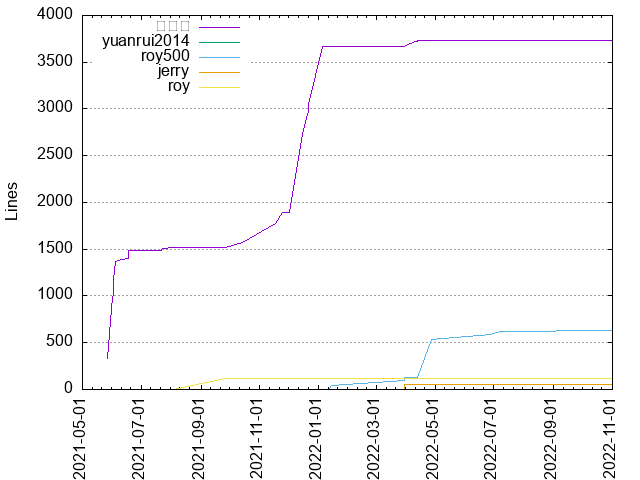
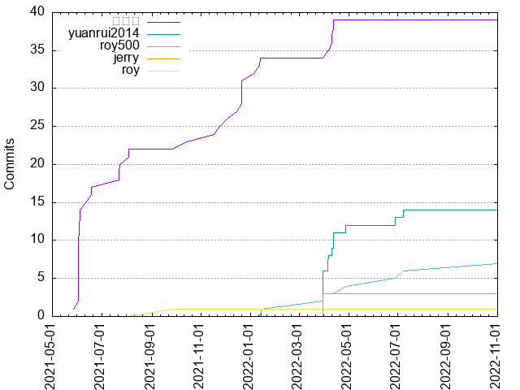

Authors
| Author | Commits (%) | + lines | - lines | First commit | Last commit | Age | Active days | # by commits |
|---|
| 荭琪枫 | 39 (59.09%) | 3728 | 903 | 2021-05-27 | 2022-04-13 | 321 days, 3:32:31 | 21 | 1 |
| yuanrui2014 | 15 (22.73%) | 0 | 0 | 2022-01-14 | 2022-11-01 | 290 days, 23:12:23 | 10 | 2 |
| roy500 | 7 (10.61%) | 631 | 25 | 2022-01-14 | 2022-11-01 | 290 days, 23:19:09 | 6 | 3 |
| jerry | 3 (4.55%) | 53 | 1 | 2022-03-31 | 2022-03-31 | 1:00:21 | 1 | 4 |
| roy | 1 (1.52%) | 113 | 0 | 2021-09-26 | 2021-09-26 | 0:00:00 | 1 | 6 |


| Month | Author | Commits (%) | Next top 5 | Number of authors |
|---|
| 2022-11 | yuanrui2014 | 1 (50.00% of 2) | roy500 | 2 |
| 2022-07 | yuanrui2014 | 1 (50.00% of 2) | roy500 | 2 |
| 2022-06 | yuanrui2014 | 1 (50.00% of 2) | roy500 | 2 |
| 2022-04 | yuanrui2014 | 6 (50.00% of 12) | 荭琪枫, roy500 | 3 |
| 2022-03 | yuanrui2014 | 5 (50.00% of 10) | jerry, roy500 | 3 |
| 2022-01 | 荭琪枫 | 3 (60.00% of 5) | yuanrui2014, roy500 | 3 |
| 2021-12 | 荭琪枫 | 6 (100.00% of 6) | | 1 |
| 2021-11 | 荭琪枫 | 2 (100.00% of 2) | | 1 |
| 2021-10 | 荭琪枫 | 1 (100.00% of 1) | | 1 |
| 2021-09 | roy | 1 (100.00% of 1) | | 1 |
| 2021-08 | 荭琪枫 | 2 (100.00% of 2) | | 1 |
| 2021-07 | 荭琪枫 | 3 (100.00% of 3) | | 1 |
| 2021-06 | 荭琪枫 | 16 (94.12% of 17) | shiheng | 2 |
| 2021-05 | 荭琪枫 | 1 (100.00% of 1) | | 1 |
| Year | Author | Commits (%) | Next top 5 | Number of authors |
|---|
| 2022 | yuanrui2014 | 15 (45.45% of 33) | 荭琪枫, roy500, jerry | 4 |
| 2021 | 荭琪枫 | 31 (93.94% of 33) | shiheng, roy | 3 |
| Domains | Total (%) |
|---|
| yeah.net | 39 (59.09%) |
|---|
| users.noreply.github.com | 15 (22.73%) |
|---|
| qq.com | 8 (12.12%) |
|---|
| nekteck.com | 4 (6.06%) |
|---|